El granero
El corazón de la granja, lleno de pacas de heno donde cualquiera puede cubrirse.
Terror rural · Supervivencia 1 vs 1
Escapa de la granja antes de que el granjero te encuentre.
Un juego de terror y supervivencia para dos personas: uno controla al sobreviviente y otro al asesino. Terror rural en el que solo existe la oscuridad de la noche, y todo gira en torno a una cosa: escapar de una granja antes de que el asesino te encuentre.
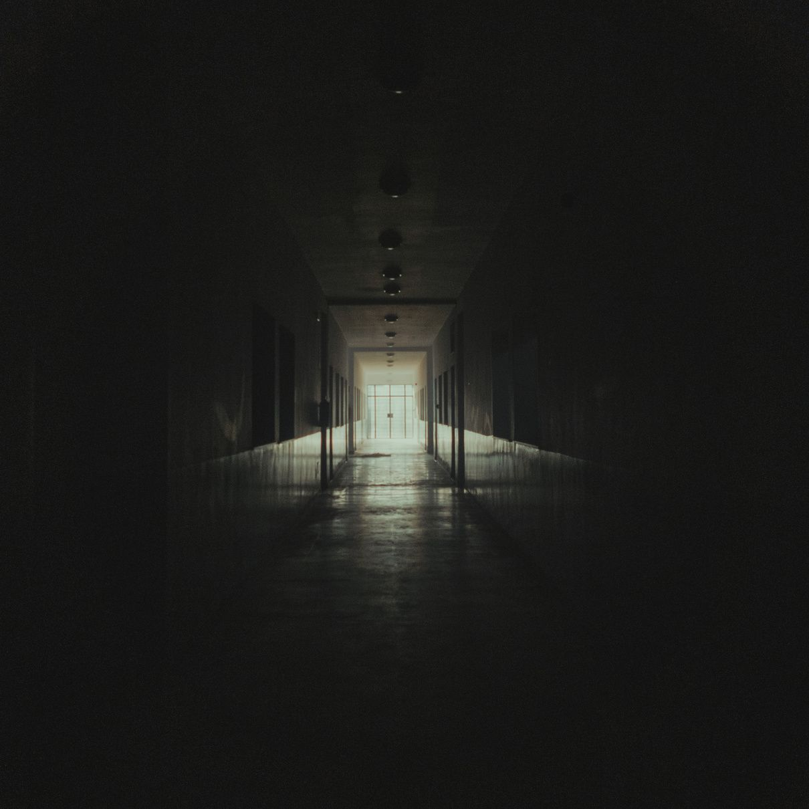
Todo ocurre de noche, en una granja que lleva años sin visitas. Cada zona cambia la forma de jugar.
El corazón de la granja, lleno de pacas de heno donde cualquiera puede cubrirse.
Los animales pueden delatarte con su ruido si no tienes cuidado.
Maíz tan alto que tapa la visión. Nunca sabes qué hay del otro lado.
Sirve para buscar objetos o para esconderse un momento.
Un rincón cerrado y siniestro que da al mapa un aire más opresivo.
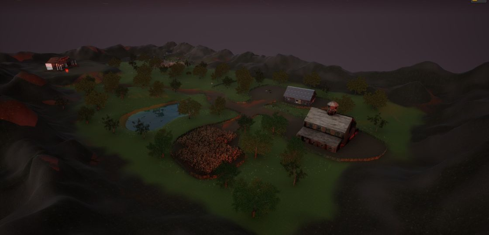
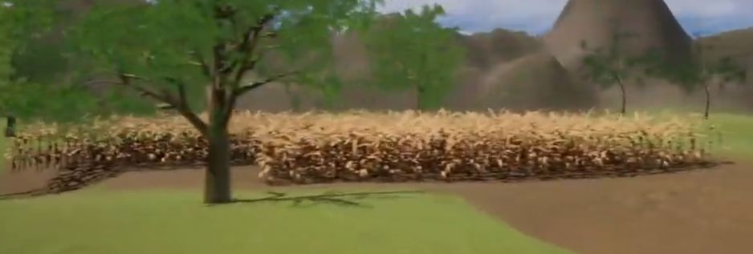
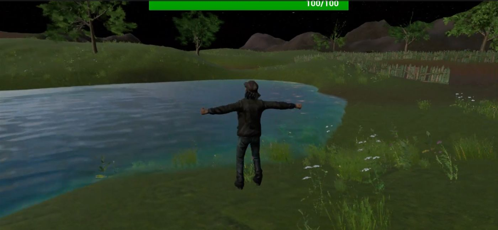
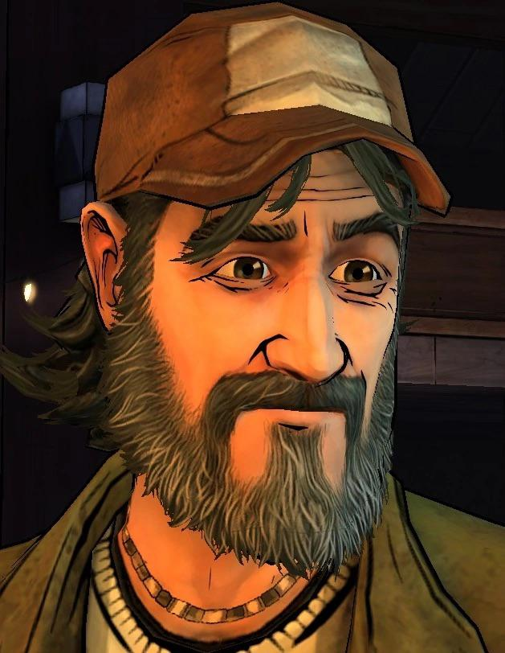
Sobreviviente
Un hombre cualquiera que terminó varado en la granja al caer la noche, sin recordar por qué. Solo quiere sobrevivir y salir de ahí.
Encontrar 3 baldes de gasolina, llevarlos al generador, arrancarlo y salir por el portón principal.
El asesino le acierta 5 disparos. Cada impacto le quita el 20 % de su resistencia.
No puede atacar. Corre, se agacha y salta para moverse con sigilo y esquivar.
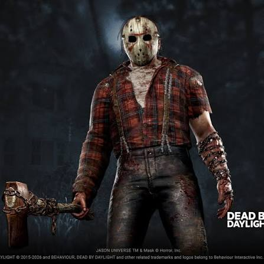
Asesino
Jason es una figura corpulenta y desfigurada que lleva años viviendo solo. La granja es su territorio y ya no distingue entre defender su casa y algo mucho más retorcido.
Disparar 5 veces al sobreviviente antes de que arranque el generador y huya.
El sobreviviente escapa antes de completar esos 5 impactos.
Camina más lento, pero compensa con armas de fuego. Debe recargar tras cada disparo y queda expuesto.
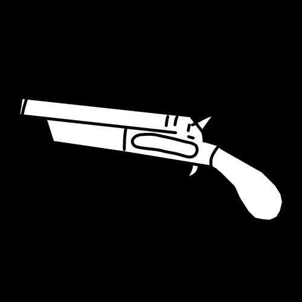
Arma principal del granjero. Gran daño de cerca y media distancia, pero dispara lento y exige recarga tras cada tiro.
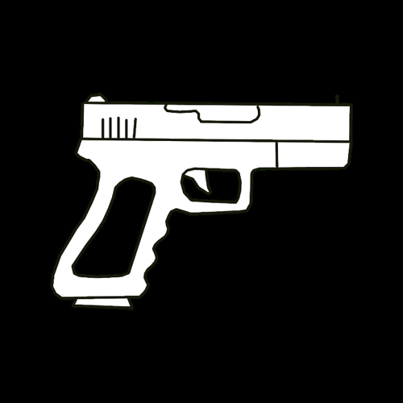
Segunda arma. Largo alcance, pero solo aturde unos segundos al sobreviviente.
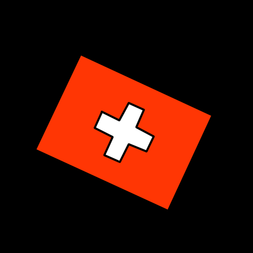
Cura uno de los impactos recibidos. Lo necesitarás para resistir.
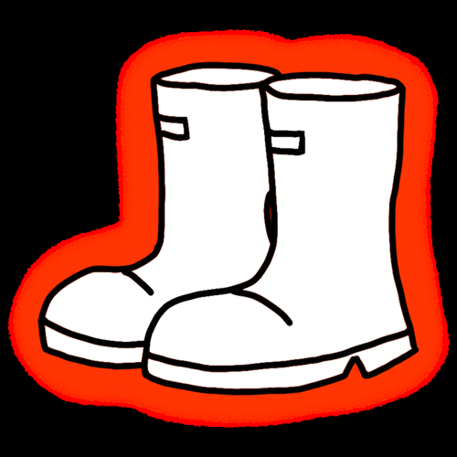
Aumentan la velocidad de Jason por un rato para alcanzar a su presa.
| Acción | Tecla |
|---|---|
| Moverse | WASD |
| Correr (sprint) | Shift mantener |
| Agacharse / sigilo | Ctrl mantener o alternar |
| Saltar | Espacio |
| Interactuar (power-up, puertas) | E |
| Usar power-up | Q o clic derecho |
| Mirar alrededor | Mouse |
| Acción | Tecla |
|---|---|
| Moverse (más lento que el sobreviviente) | WASD |
| Apuntar / alzar arma | Clic derecho (mantener) |
| Disparar | Clic izquierdo |
| Recargar | R |
| Cambiar de arma | Q o rueda del mouse |
Partículas que sostienen el miedo: niebla, lluvia, luciérnagas, moscas, humo de escopeta, polvo de heno, hojas de maíz, chispas del generador, gotas de gasolina y sangre al recibir un impacto.
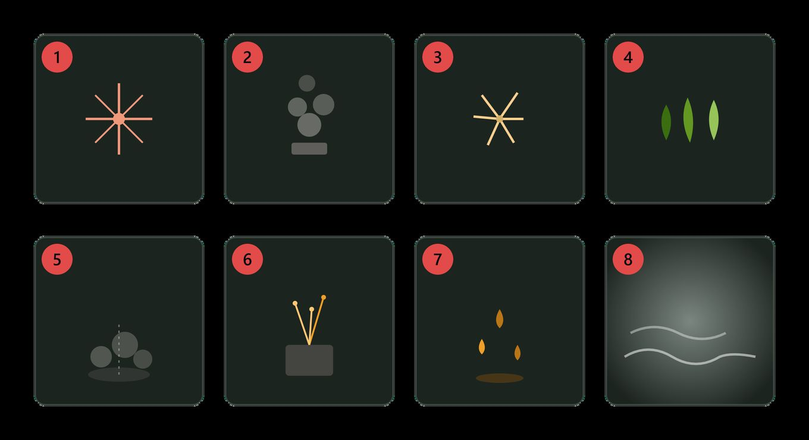
Capturas del proyecto en Unreal Engine 5 y pantallas de menú.
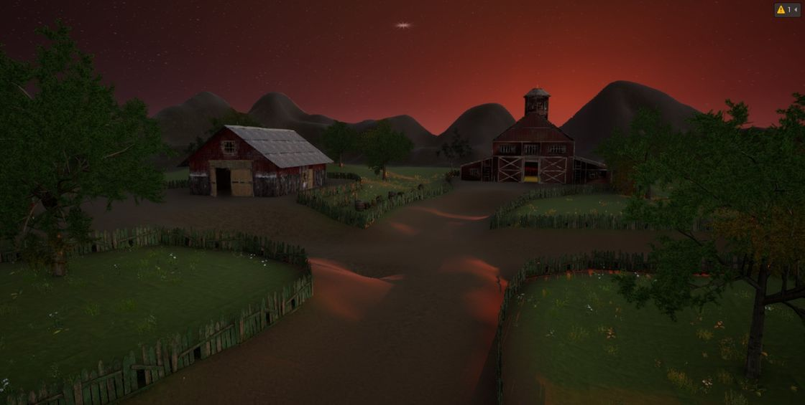
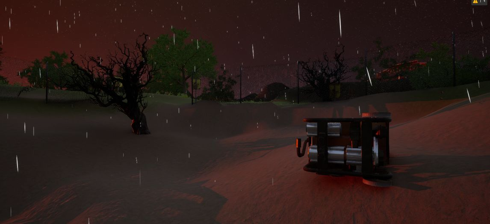
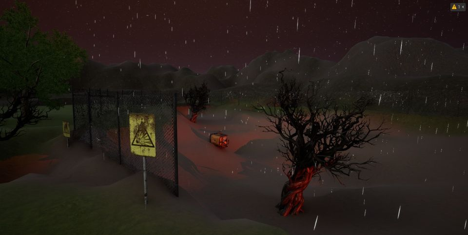
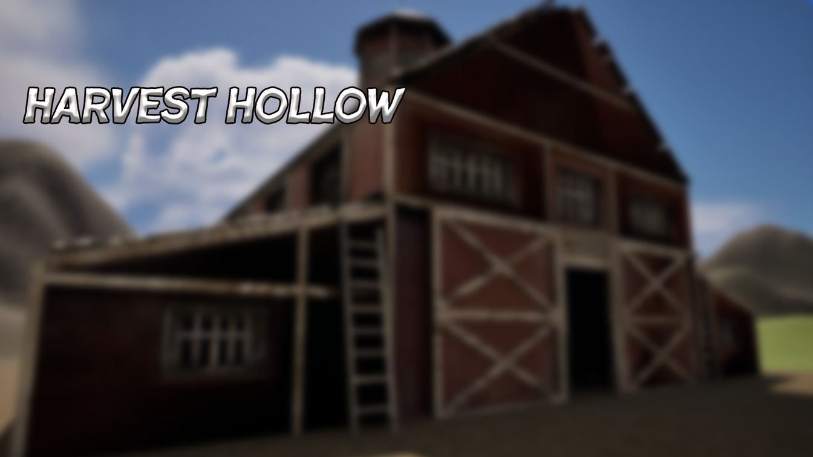
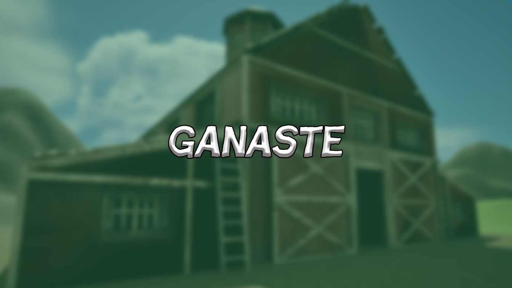
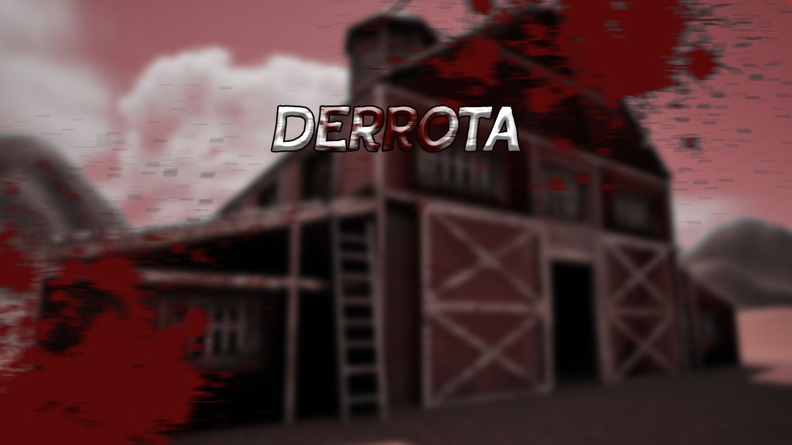
Maestra: Ángeles Daniela Ramírez Álvarez